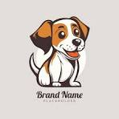
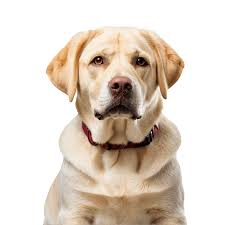
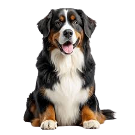
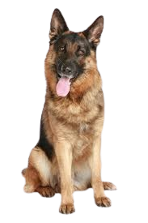
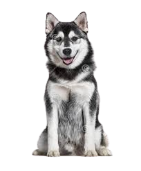

Veterinaria Golden
La super Veterinaria del valle
Atendemos todo tipos de especialidades y contamos con muchas tecnicas en donde tratamos a tus mascotas como reyes y lo cuidamos con las mejores tecnología.
Más Información

Boyero de Berna
Es una raza de perro boyero muy versátil que se originó en el Cantón de Berna en Suiza. Se trata de un moloso macizo, con una altura aproximada de 70 cm a la cruz y un peso, si es macho, que ronda los 48-51 kg y, si es hembra, los 46-49 kg. Se caracteriza por sus colores negro, marrón y blanco.
Temperamento:
- Cariñoso.
- Leal.
- Inteligente.
- Fiel.
- Confiable.

Pastor Alemán
También conocido como ovejero alemán, es una raza de perro pastor originaria de Alemania de tamaño mediano a grande. La raza es relativamente nueva, ya que su origen se remonta a 1899. Forman parte del grupo de pastoreo, ya que fueron perros desarrollados originalmente para reunir y vigilar ganado.
Temperamento:
- Inteligente.
- Obstinado.
- Vigilante.
- Valiente.
- Protector.

Husky Siberiano
Es una raza de perro de trabajo originaria del norte de Siberia en Rusia. Este perro fue creado por la tribu Chukchi como perro de trabajo para tirar de los trineos a través de largas distancias durante sus partidas de caza, sirviendo así como vehículo de transporte rápido para las presas en la vuelta al poblado.
Temperamento:
- Inteligente.
- Extrovertido.
- Gentil.
- Amigable.
- Alerta.